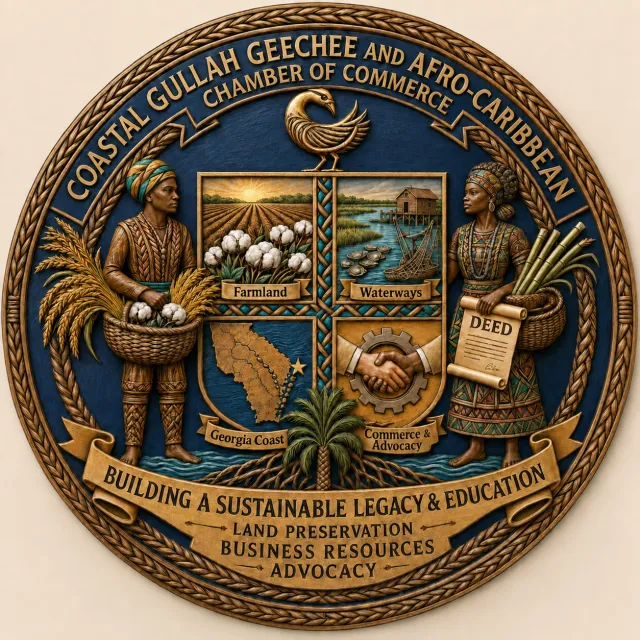
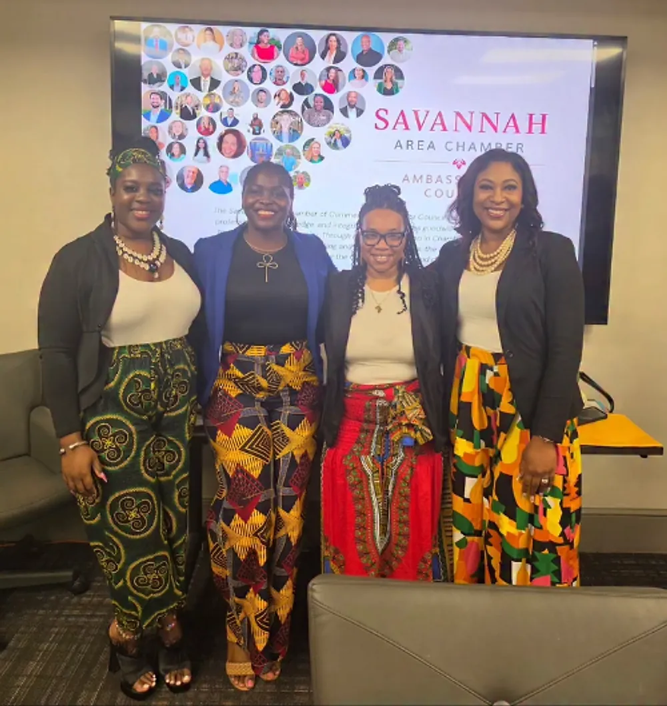

Rooted in heritage. Built for business.
We exist to educate, empower and advocate for Gullah Geechee, Afro-Caribbean, minority-owned and women-owned businesses throughout the Georgia Coast and beyond.
Why we started
Our communities have built businesses on this coast for generations, often without a seat at the table.
The chamber was started to change that: a space where Gullah Geechee and Afro-Caribbean entrepreneurs are represented, connected and supported, and where the culture itself is honored, taught and carried forward.
Culture is our foundation and commerce is the pathway forward. We operate by appointment and through community-based programs and events.
Drafted from the client meeting notes ("we started because we didn't have representation"). Confirm the wording with chamber leadership.

What is Gullah Geechee?
A living culture of the Southern coast.
The Gullah Geechee are descendants of enslaved West and Central Africans who lived and labored on the coastal plantations of the Carolinas, Georgia and Florida. Relative isolation on the Sea Islands and coast allowed them to preserve a distinctive language, foodways, music, craft and spiritual traditions.
Their legacy lives on in sweetgrass baskets, indigo and haint-blue traditions, rice cultivation, storytelling and the Gullah language. The Gullah Geechee Cultural Heritage Corridor, designated by Congress, recognizes and helps protect this heritage.
Draft summary. Please review and refine with chamber leadership.
Leadership & ambassadors
The people carrying the work forward.
Sample profiles. Add real names, titles and headshots to LEADERS in js/data.js.

Be part of the legacy.
Join, volunteer, sponsor or partner with us. There's a place for you here.